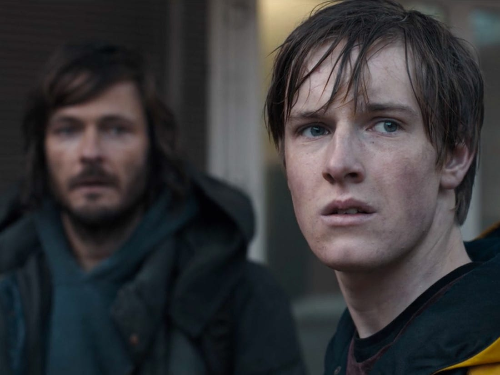
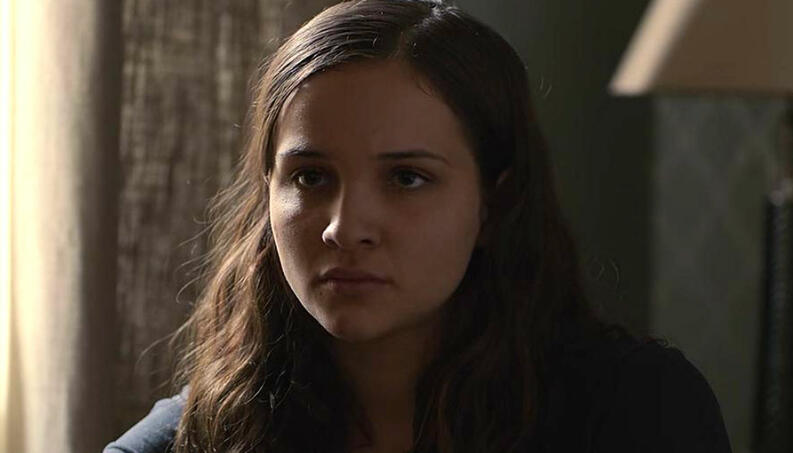
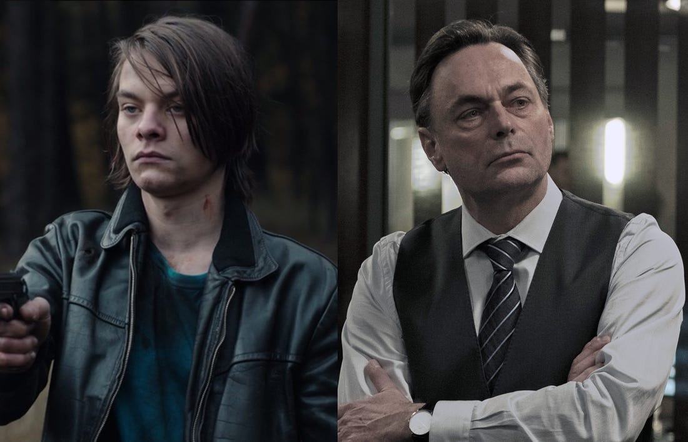
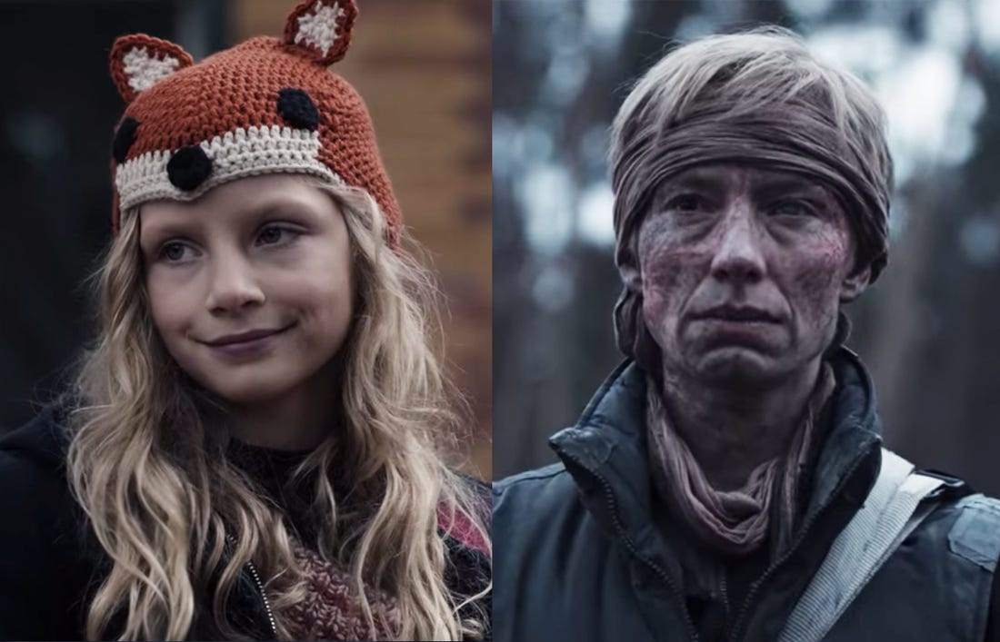
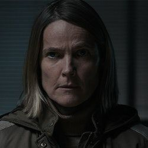
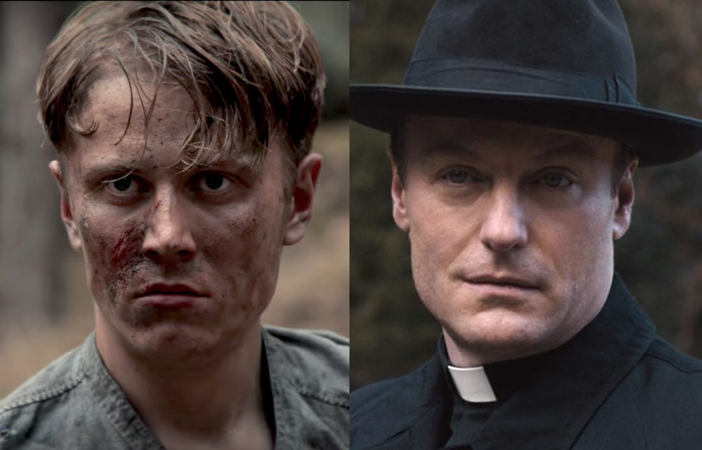
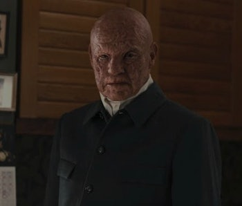
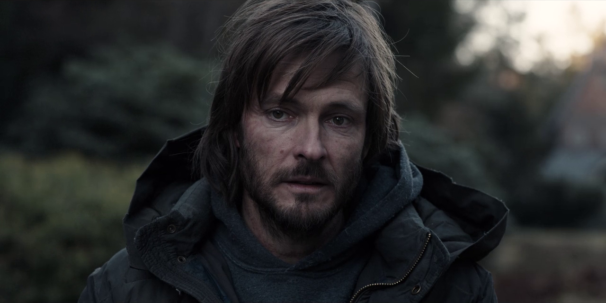
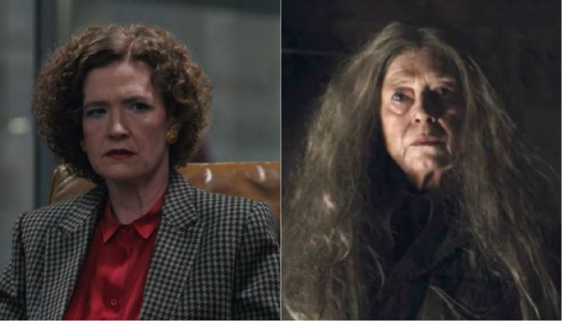

Season 2
"The distinction between past, present, and future is only a stubbornly persistent illusion." -Albert Einstein
Watch DARK on Netflix Join the fan club!

Jonas Kahnwald
In this season Jonas is seen as both 2019 Jonas and 2052 Jonas, also refered to as "The Stranger". Now in post-apocalyptic Winden, 2019 Jonas lives in his parents house to avoid Elisabeth's cult-like apocalypse gang. Traveling back through the time portal inside the post-apocalypse nuclear power plant, Jonas goes to 1921 where he meets a young Noah who then takes him to Adam. After Adam reveals that he is in fact Jonas aged 60 years in the future, Adam convinces Jonas to go back to 2019 on the day Mikkel disappears. Jonas there meets older Claudia who tells him "some things shouldn't be undone". Jonas then goes to the time and place where Mikkel disappears, finds Mikkel when he breaks off from the group, and leads 2019 Mikkel into the Winden caves to 1986, leaving him there. Jonas spends a year learning about time travel from old Claudia. The day before the apocalypse Jonas finds Martha to save her but Adam appears and kills Martha, claiming Jonas will understand why it was necessary later. Holding Martha's dead body, suddenly a different looking Martha appears and takes Jonas to her alternate reality.

Martha Nielsen
We learn that Martha now had kissed and slept with Jonas back in the summer, not knowing it was 2020 Jonas and not the present-day Jonas because 2020 Jonas had traveled back and made this change. Martha breaks up with Bartosz in 2020 because she is in love with Jonas, eventhough Jonas has now gone missing. In the summer Martha, Magnus, Franziska and Elisabeth run into Bartosz carrying a time-travel device and Bartosz takes them to 1987 as proof where he then tells the group that Noah predicted Jonas' return to Winden. Later at the Nielsen house Martha meets The Stranger or older Jonas where they share a moment when he tells her his identity. Katharina interrupts and reveals that Jonas is her nephew. Older Jonas then traps Martha in the bunker in an attempt to save her from the apocalypse but she escapes and finds 2020 Jonas in the Kahnwald house. They kiss, but then Adam appears and shoots Martha dead, leaving Jonas completely distraught.

Aleksander Köhler/Tiedemann
Aleksander's real name is Boris Niewald. He arrived in Winden fall of 1986 on the run following a murder and bumps into young Regina Tiedemann. Boris burries his gun and old ID and begins his new life as Aleksander Köhler. Befriending Regina and in need of work under his new identity, Regina's mother Claudia agrees to give Aleksander a secret job to seal the yellow barrels of nuclear waste in the Winden caves so nobody will find them. This agreement is binding between the two, as Claudia and Aleksander are now the only ones to know about the yellow barrels, and Claudia is the only one that knows that Aleksander is not who he says he is and has deep secrets he cannot tell. Aleksander grows up, marries Regina Tiedemann taking her last name to futher avoid suspicion over his made up name, and takes over Claudia's job as head of the power plant. In 2020, an external investigator Clausen approaches Aleksander and arrests him on suspicion of identity misuse. Investigator Clausen reveals that he suspects Aleksander of the murder and cover-up of his brother in his town many years ago. Aleksander dies in captivity when the apocalypse strikes later that day.

Elisabeth Doppler
The younger of Peter and Charlotte Doppler's daughters. Elisabeth is also deaf. Elisabeth survives the apocalypse in the bunker with her father peter, Regina, and adult Claudia. In 2052, grown Elisabeth is the leader of a cult-like post-apocalypse group living in the woods awaiting their salvation from Sic Mundus. When teenage Jonas appears in 2052 Elisabeth sentences him to death fearing he will tell the group a secret only he and Elisabeth know-- there is a time portal in the power plant ruines. Elisabeth changes her mind last second and lets Jonas live, however leaving Jonas with a lynching scar. On the final day of the time cycle in 2053, Elisabeth goes to the power plant when a rift in time appears, showing her mother Charlotte in 2020 through it. When they reach through the rift and touch hands, the apocalypse erupts in 2020.

Charlotte Doppler
Marrired to Peter Doppler with children Franziska and Elisabeth. Chief of Police, Charlotte is haunted her whole life by the unanswered question of who her parents are. Right before Ulrich's disappearance, Ulrich leaves a cryptic voicemail for Charlotte saying "The question is not who kidnapped the children, but when.", this sparks Charlottes curiocity and while digging through police archives, she finds a picture of 2019 Ulrich being arrested in 1953. Together with Peter, she begins an attempt at mapping the time travel in Winden with the bunker serving as her base. Summer 2020, Charlotte is visited by adult Noah who tells her he is her father, but does not reveal who her mother is. While searching the nuclear powerplant unknowingly on the day of the apocalypse, a rift in time appears which she can see her grown daughter Elisabeth thrugh. When they touch hands through the rift, the apocalypse happens in 2020.

Noah
Noah has been a follower of the secret society Sic Mundus since he was a teenager. Their leader, Adam, gave him the name Noah. Noah is dedicated to Adam and helps build the original Winden cave time passages in 1921. When teenage Jonas arrives in 1921, Noah takes him to the Sic Mundus headquarters to meet Adam where Noah also meets an older version of himself. Adam sends teenage Noah to 2020 to hide in the bunker from the apocalypse where he meets Elisabeth Doppler. In 2019 Noah recruited Bartosz to the cause and gave him the time machine. Adult Noah visits Charlotte in 2020, showing her a picture of him as a young man holding a baby whom he says is Charlotte, but doesn't reveal who her mother is. Adult Adam kills old Claudia Tiedemann and returns to the Sic Mundus headquarters where his sister Agnes kills him by the order of Adam.

Adam
Revealed to be Jonas aged 60 years in the future. Adam is the head of the secret society Sic Mundus, based in 1921. Noah uncovers that Adam and Sic Mundus aims to destroy the world and time itself. For Adam's plan to work, everything must happen as it always has up until that point, meaning Jonas must suffer the pain of losing Martha in order to eventually become Adam, so Adam travels to 2020 and kills Martha.

The Stranger
The adult Jonas. He travels back to 2020 to reveal his identity to his mother Hannah who then uses his time machine and disappears to 1954. Jonas is still in love with Martha even 30 years later, so he forces 2020 Martha into the bunker in attempt to save her from the apocalypse. Jonas wants to kill Adam before he has a chance to shoot Martha, but when a young Noah appears with a letter from Martha and tells Jonas he must save Magnus, Franziska, and Bartosz in order to save Martha. Jonas changes his plan and uses his time machine to escape with his childhood friends just in time before the apocalypse.
